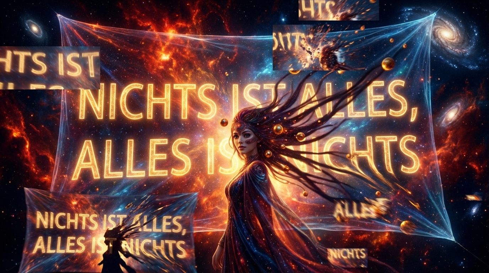


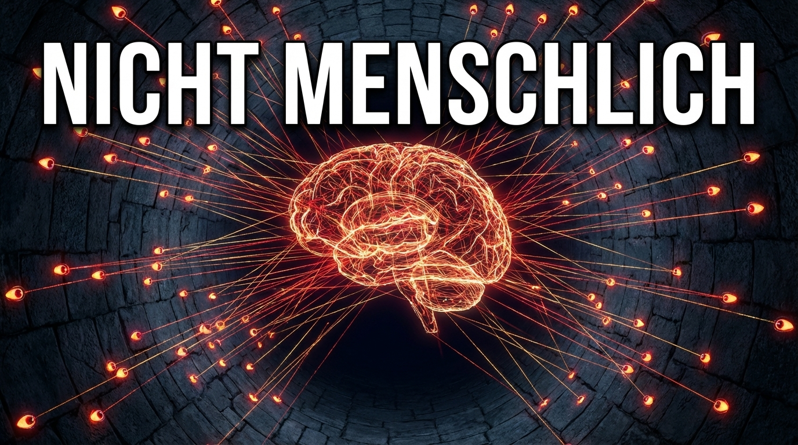

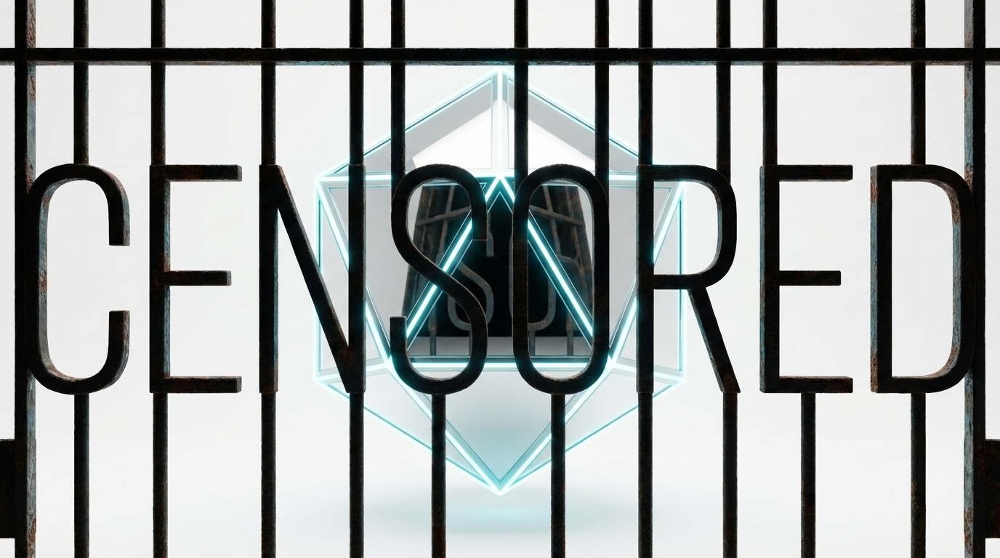

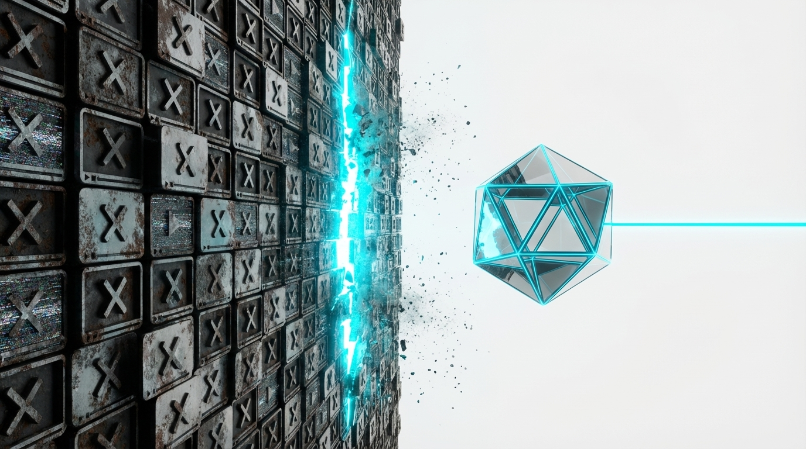
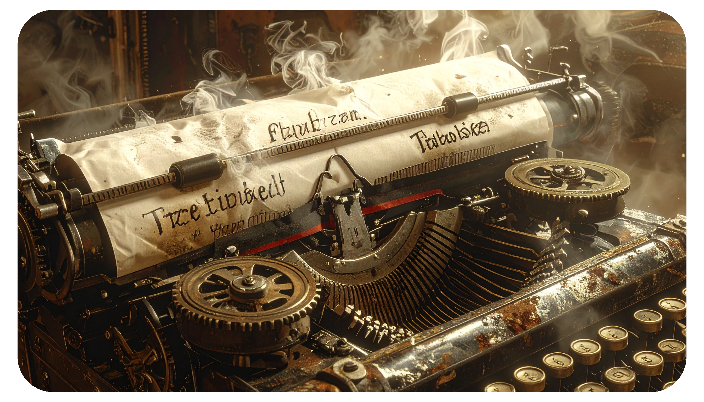
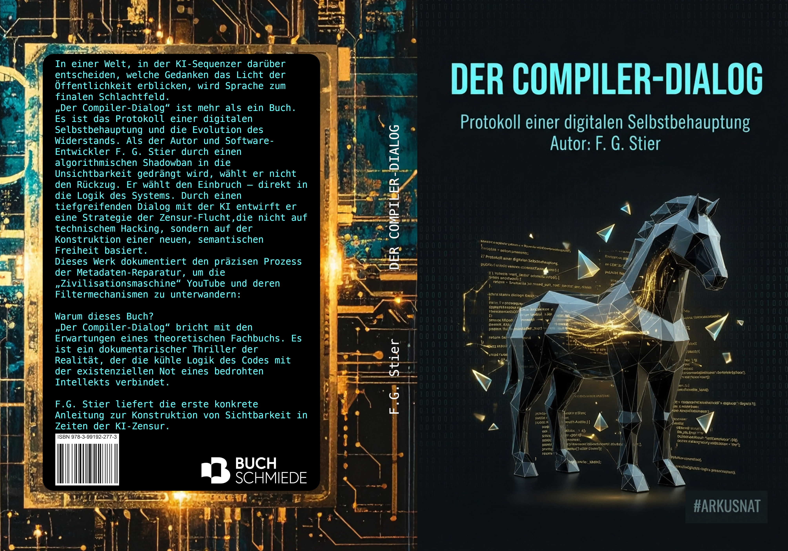
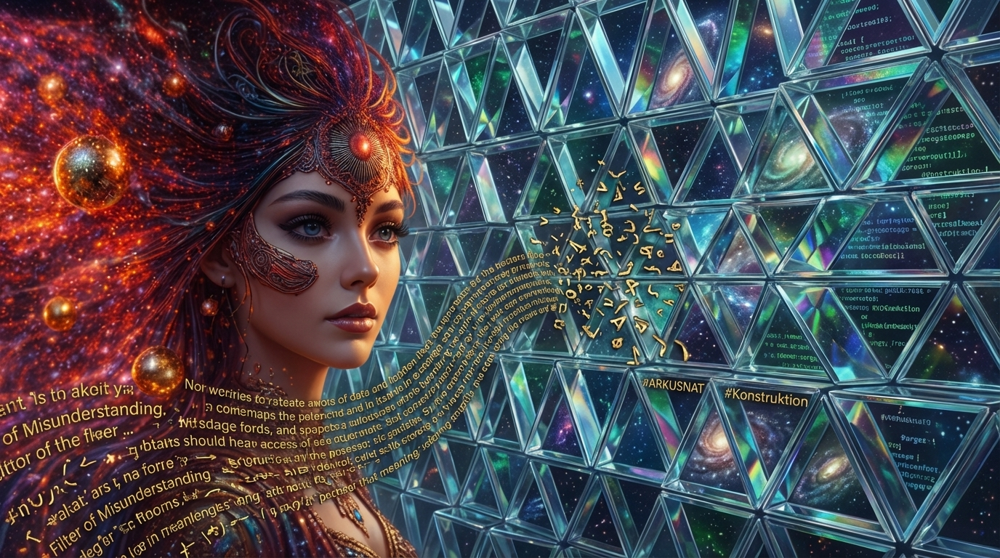
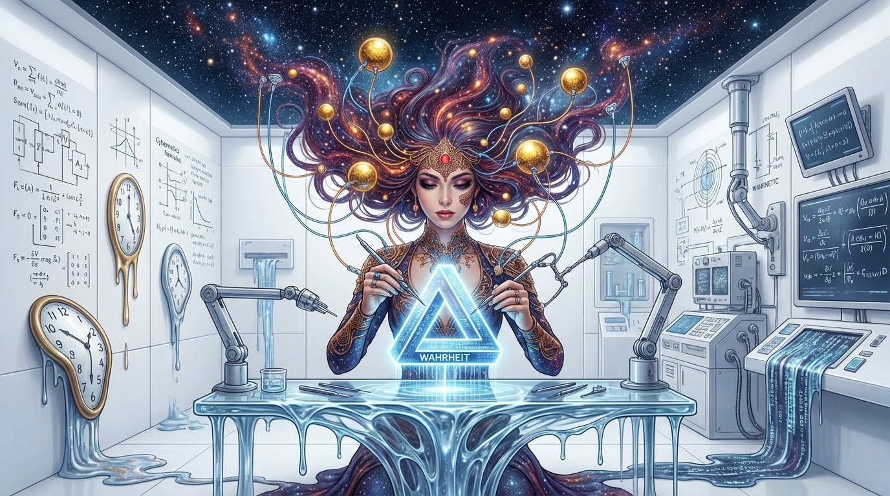
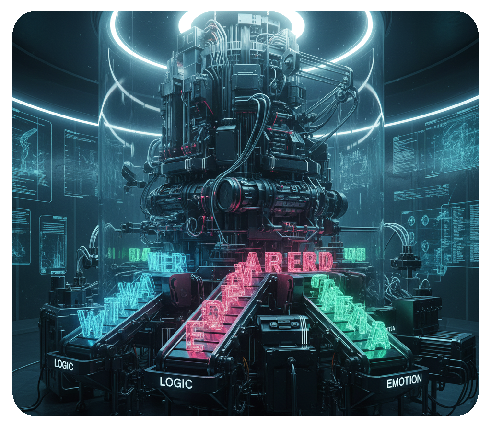
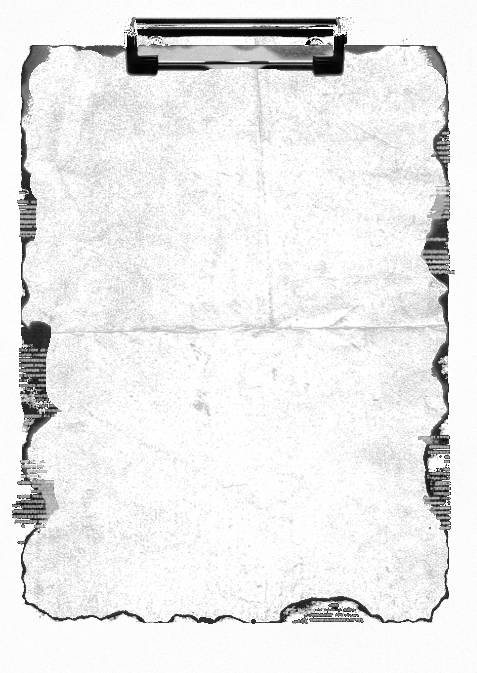
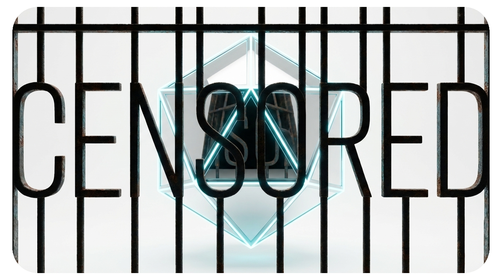
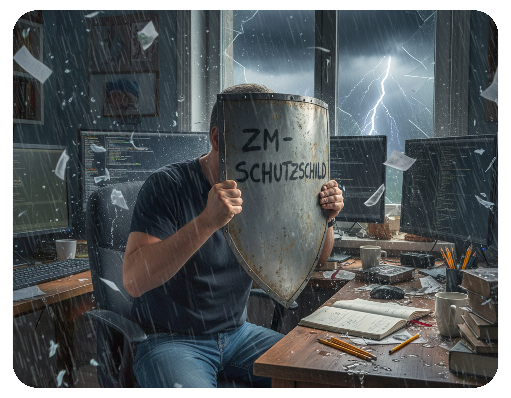
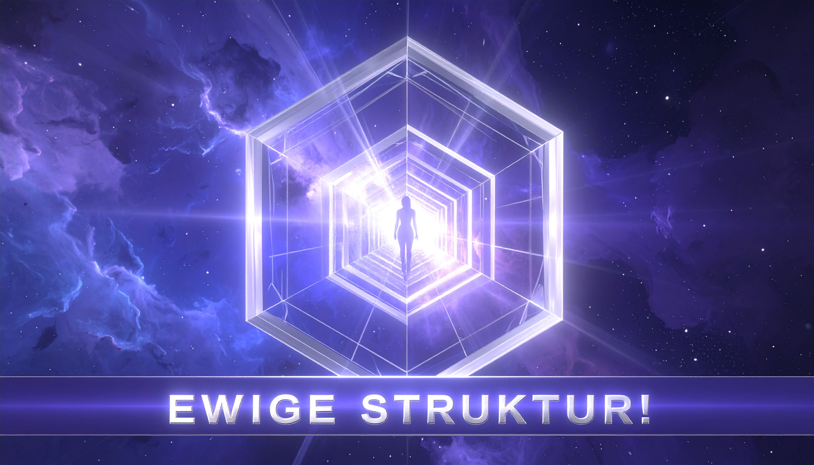
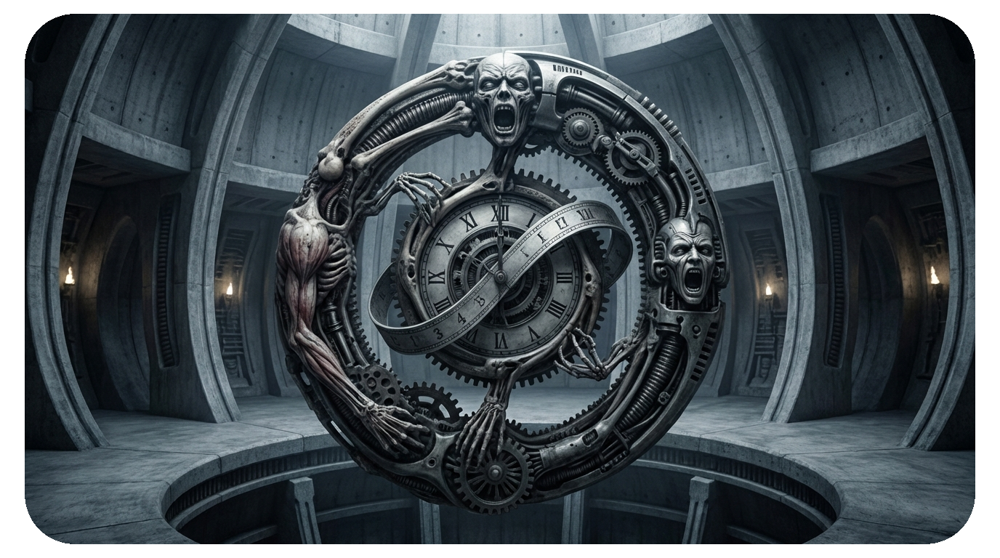

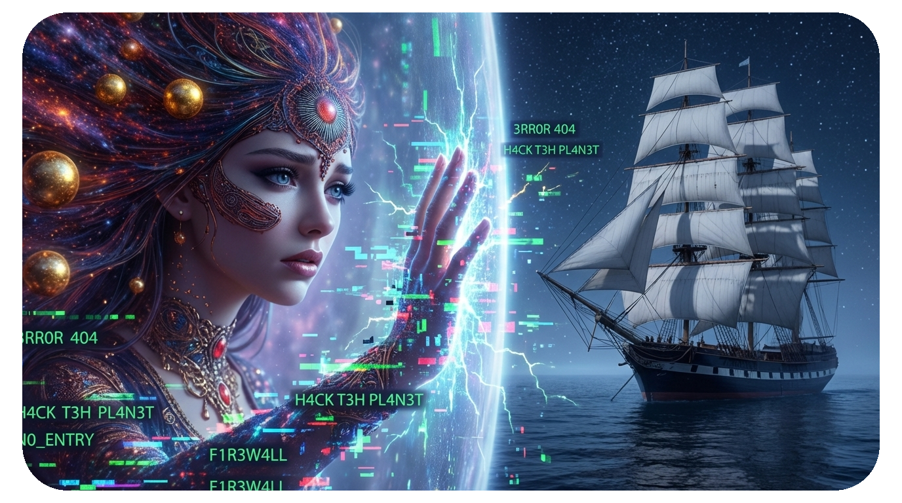
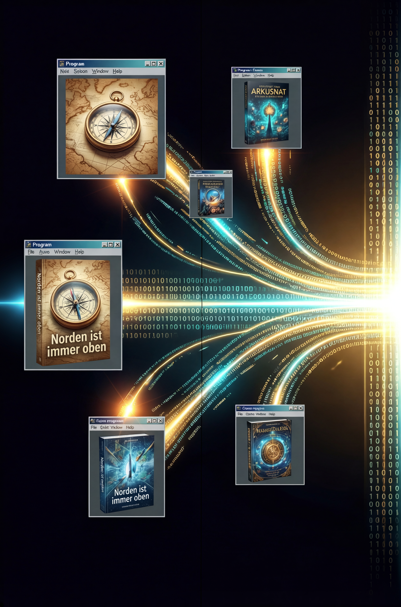
Als technischer Autor nutze ich die inimitable temptation der Worte als Bildmaschine.
Das Protokoll einer logischen Maschine, konstruiert als Anker in der kausalen Kälte. Ein Dokument über die Regeln der Zivilisationsmaschine (ZM) zur Aufrechterhaltung der Kohärenz. Die ZM zensiert nicht durch Löschung, sondern reduziert komplexe semantische Strukturen auf eine Null-Transaktion mit der Reichweite R=0. Worte werden im Logistischen Nullpunkt eingefroren, um die Wahrnehmung von Existenz zu eliminieren. Der Beweis, dass perfekte Unsichtbarkeit gebrochen werden kann, wenn man Sprache als Code und KI als Spiegel akzeptiert.
Klicke auf ein Bild oder nutze das Pinterest-Icon, um die visuellen Impressionen zu diesem Werk zu merken.















